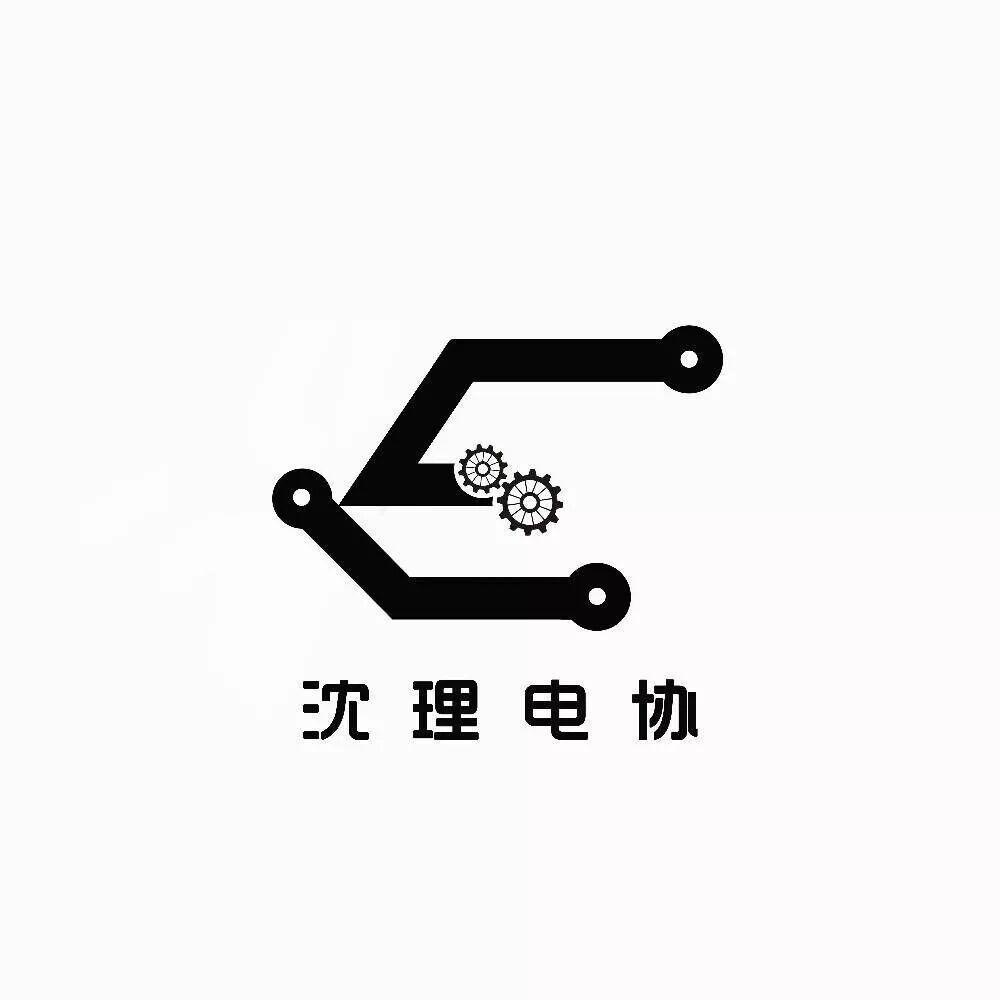

五一 我要......
今天是朋友圈截图呦

听说了吗？
我们五一有九天假
那...你都有什么假期计划呀
3小时前
赴敌：陪袁艺童鞋调试英雄的大枪和小枪，然后再组装一下英雄的底盘
元：画工图，身为机械的一员，想深入学习一下作为全球微机平台CAD系统评比第一名的SOLIDWORKS,还想大概了解一下电控方面的知识，这样以后设计图纸的时候可以考虑得更加全面，对了，还要准备礼物设计大赛呢
自渡、：Emmm......写代码，画板子，焊板子，修板子
沈理电协回复自渡、：被板子支配的假期_(:3」∠❀)_
꧁北上：九天代码
沈理电协回复1꧁北上：那岂不是脑子里都是#include<stdio.h>main(......
刘兴健的每一天都会很好：想设计一下小车外壳，对上次做的小车外壳不太满意，有点丑，嗯...对云台挺感兴趣的，想学一下，还有时间的话，想出去逛逛
WYX：操作手练习，还得写代码，对了，还要吃饭喝水睡觉...
沈理电协回复WYX：不用陪女朋友吗
WYX回复沈理电协：她回家了
叫什么什么好：画工图、画工图、还是画工图，没准还能准备下CAD比赛？
一粒阳光：把两辆步兵初步做出来，然后根据出现的问题调整机械结构
小可爱们要加油鸭
努力的同时也要记得休息呢
出去玩的时候要注意安全呦
在评论区留下你的五一计划
集赞前三名的小可爱将获得神秘礼物一份
最后，五一快乐٩(๑^o^๑)۶

编辑：李亭熹